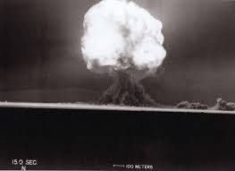

The first chemical explosive ever made was probably gunpowder, made in the 9th century in china by people trying to create an elixir of immortality. The first commercially made explosive is dynamite, made by Alfred nobel, who founded the Nobel prizes with his earnings. Dynamite was a mixture of the sensitive explosive nitroglycerine and other chemicals that rendered the dynamite much more safe and resistant to shock than nitroglycerine, meaning it can be used without worry of accidental spontaneous explosions.

The first nuclear explosives were developed during world war I for the manhattan project. The only nuclear weapons ever detonated for warfare were the little boy and fat man bombs, both being the less powerful fission bomb. There are also thermonuclear bombs which have thankfully never been launched as a weapon, which is very good, otherwise the resulting destruction would be much more than both little boy and fat man combined and destroy everything kilometers around.
A picture of the first ever nuclear explosive detonated, the trinity test.